中文
中文S. W. Hawking
Editor’s Note
It was realized more than two hundred years ago that there is a critical mass and radius beyond which light cannot escape the gravitational field of an object—such an object becomes a “black hole”. This idea was rigorously validated by the theory of general relativity. Here Stephen Hawking shows that black holes have effective temperatures that are inversely related to their mass, and should therefore radiate photons and neutrinos from their event horizons—they are not fully “black”. As this radiation proceeds, the black hole loses mass. Finally it emits large quantities of X-rays and gamma-rays, and disappears in an explosion. “Hawking radiation” from black holes is now widely expected, but has not yet been seen. 中文
QUANTUM gravitational effects are usually ignored in calculations of the formation and evolution of black holes. The justification for this is that the radius of curvature of space-time outside the event horizon is very large compared to the Planck length
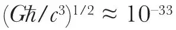
cm, the length scale on which quantum fluctuations of the metric are expected to be of order unity. This means that the energy density of particles created by the gravitational field is small compared to the space-time curvature. Even though quantum effects may be small locally, they may still, however, add up to produce a significant effect over the lifetime of the Universe ≈ 1017 s which is very long compared to the Planck time ≈10–43 s. The purpose of this letter is to show that this indeed may be the case: it seems that any black hole will create and emit particles such as neutrinos or photons at just the rate that one would expect if the black hole was a body with a temperature of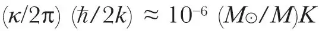
where is the surface gravity of the black hole1. As a black hole emits this thermal radiation one would expect it to lose mass. This in turn would increase the surface gravity and so increase the rate of emission. The black hole would therefore have a finite life of the order of 1071 (M⊙/M)–3 s. For a black hole of solar mass this is much longer than the age of the Universe. There might, however, be much smaller black holes which were formed by fluctuations in the early Universe2. Any such black hole of mass less than 1015 g would have evaporated by now. Near the end of its life the rate of emission would be very high and about 1030 erg would be released in the last 0.1 s. This is a fairly small explosion by astronomical standards but it is equivalent to about 1 million 1 Mton hydrogen bombs. 中文
is the surface gravity of the black hole1. As a black hole emits this thermal radiation one would expect it to lose mass. This in turn would increase the surface gravity and so increase the rate of emission. The black hole would therefore have a finite life of the order of 1071 (M⊙/M)–3 s. For a black hole of solar mass this is much longer than the age of the Universe. There might, however, be much smaller black holes which were formed by fluctuations in the early Universe2. Any such black hole of mass less than 1015 g would have evaporated by now. Near the end of its life the rate of emission would be very high and about 1030 erg would be released in the last 0.1 s. This is a fairly small explosion by astronomical standards but it is equivalent to about 1 million 1 Mton hydrogen bombs. 中文
To see how this thermal emission arises, consider (for simplicity) a massless Hermitean scalar field φ which obeys the covariant wave equation φ; abgab = 0 in an asymptotically flat space time containing a star which collapses to produce a black hole. The Heisenberg operator φ can be expressed as
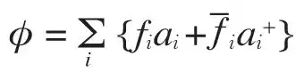
where the fi are a complete orthonormal family of complex valued solutions of the wave equation fi;ab gab = 0 which are asymptotically ingoing and positive frequency—they contain only positive frequencies on past null infinity I–3,4,5. The position-independent operators ai and
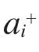
are interpreted as annihilation and creation operators respectively for incoming scalar particles. Thus the initial vacuum state, the state containing no incoming scalar particles, is defined by ai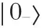
= 0 for all i. The operator φ can also be expressed in terms of solutions which represent outgoing waves and waves crossing the event horizon: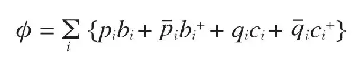
where the pi are solutions of the wave equation which are zero on the event horizon and are asymptotically outgoing, positive frequency waves (positive frequency on future null infinity I+) and the qi are solutions which contain no outgoing component (they are zero on I+). For the present purposes it is not necessary that the qi are positive frequency on the horizon even if that could be defined. Because fields of zero rest mass are completely determined by their values on I–, the pi and the qi can be expressed as linear combinations of the fi and the
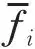
: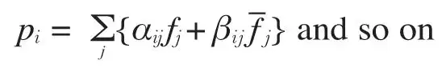
The βij will not be zero because the time dependence of the metric during the collapse will cause a certain amount of mixing of positive and negative frequencies. Equating the two expressions for φ, one finds that the bi, which are the annihilation operators for outgoing scalar particles, can be expressed as a linear combination of the ingoing annihilation and creation operators ai and
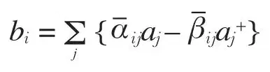
Thus when there are no incoming particles the expectation value of the number operator
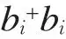
of the ith outgoing state is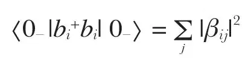
The number of particles created and emitted to infinity in a gravitational collapse can therefore be determined by calculating the coefficients βij. Consider a simple example in which the collapse is spherically symmetric. The angular dependence of the solution of the wave equation can then be expressed in terms of the spherical harmonics Ylm and the dependence on retarded or advanced time u, υ can be taken to have the form ω–1/2 exp (iωu) (here the continuum normalisation is used). Outgoing solutions plmω will now be expressed as an integral over incoming fields with the same l and m:
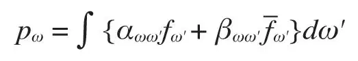
(The lm suffixes have been dropped.) To calculate αωω' and βωω' consider a wave which has a positive frequency ω on I+ propagating backwards through spacetime with nothing crossing the event horizon. Part of this wave will be scattered by the curvature of the static Schwarzschild solution outside the black hole and will end up on I– with the same frequency ω. This will give a δ(ω–ω') behaviour in αωω'. Another part of the wave will propagate backwards into the star, through the origin and out again onto I–. These waves will have a very large blue shift and will reach I– with asymptotic form
Cω–1/2 exp {–iω–1 log (υ0–υ) + iωυ} for υ < υ0
and zero for υ ≥ υ0 , where υ0 is the last advanced time at which a particle can leave I–, pass through the origin and escape to I+. Taking Fourier transforms, one finds that for large ω', αωω' and βωω' have the form:
αωω' ≈ C exp [i(ω–ω')υ0](ω'/ω)1/2 · Γ(1–iω/) [–i(ω–ω')]–1+iω/
βωω' ≈ C exp [i(ω+ω')υ0](ω'/ω)1/2 · Γ(1–iω/) [–i(ω+ω')]–1+iω/
The total number of outgoing particles created in the frequency range ω → ω+dω is
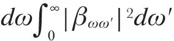
. From the above expression it can be seen that this is infinite. By considering outgoing wave packets which are peaked at a frequency ω and at late retarded times one can see that this infinite number of particles corresponds to a steady rate of emission at late retarded times. One can estimate this rate in the following way. The part of the wave from I+ which enters the star at late retarded times is almost the same as the part that would have crossed the past event horizon of the Schwarzschild solution had it existed. The probability flux in a wave packet peaked at ω is roughly proportional to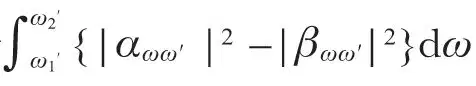
where ω2' ≫ ω1' ≫ 0. In the expressions given above for αωω' and βωω' there is a logarithmic singularity in the factors [–i(ω–ω')]–1+iω/ and [–i(ω+ω')]–1+iω/. Value of the expressions on different sheets differ by factors of exp(2πnω–1). To obtain the correct ratio of αωω' to βωω' one has to continue [–i(ω+ω')]–1+iω/ in the upper half ω' plane round the singularity and then replace ω' by –ω'. This means that, for large ω',
|αωω'| = exp (πω/)|βωω'|
From this it follows that the number of particles emitted in this wave packet mode is (exp(2πω/) –1)–1 times the number of particles that would have been absorbed from a similar wave packet incident on the black hole from I–. But this is just the relation between absorption and emission cross sections that one would expect from a body with a temperature in geometric units of /2π. Similar results hold for massless fields of any integer spin. For half integer spin one again gets a similar result except that the emission cross section is (exp(2πω/)+1)–1 times the absorption cross section as one would expect for thermal emission of fermions. These results do not seem to depend on the assumption of exact spherical symmetry which merely simplifies the calculation. 中文
Beckenstein6 suggested on thermodynamic grounds that some multiple of should be regarded as the temperature of a black hole. He did not, however, suggest that a black hole could emit particles as well as absorb them. For this reason Bardeen, Carter and I considered that the thermodynamical similarity between and temperature was only an analogy. The present result seems to indicate, however, that there may be more to it than this. Of course this calculation ignores the back reaction of the particles on the metric, and quantum fluctuations on the metric. These might alter the picture. 中文
Further details of this work will be published elsewhere. The author is very grateful to G. W. Gibbons for discussions and help. 中文
(248, 30-31; 1974)
S. W. Hawking
Department of Applied Mathematics and Theoretical Physics and Institute of Astronomy, University of Cambridge
Received January 17, 1974.
References:
1. Bardeen, J. M., Carter, B., and Hawking, S. W., Commun. math. Phys., 31, 161–170 (1973).
2. Hawking, S. W., Mon. Not. R. astr. Soc., 152, 75-78 (1971).
3. Penrose, R., in Relativity, Groups and Topology (edit. by de Witt, C. M., and de Witt, B. S). Les Houches Summer School, 1963 (Gordon and Breach, New York, 1964).
4. Hawking, S. W., and Ellis, G. F. R., The Large-Scale Structure of Space-Time (Cambridge University Press, London 1973).
5. Hawking, S. W., in Black Holes (edit. by de Witt, C. M., and de Witt, B. S), Les Houches Summer School, 1972 (Gordon and Breach, New York, 1973).
6. Beckenstein, J. D., Phys. Rev., D7, 2333–2346 (1973).